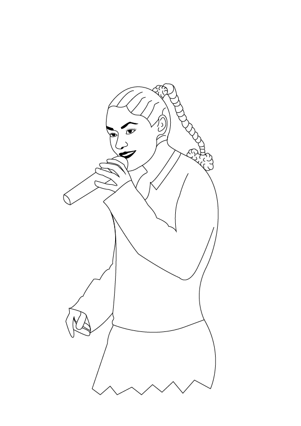

Når man går forbi Natasjas grav på Assistens Kirkegården, står stenen altid flot, og der ligger altid smukke, friske blomster.
Natasja satte et kæmpe aftryk på det danske samfund, og her 17 år senere bliver hun stadig dagligt besøgt af venner, familie eller fans. Men hvilket aftryk satte hun, og hvordan kan det være, at den danske befolkning stadig høre Natasjas musik, hylder hendes væsen og hvilken betydning har hun haft for andre kvinder i musikbranchen?
Hvis I vil vide mere om netop dette, kan I høre podcasten Bag Om her, eller se en motion graphic om Natasja her.
